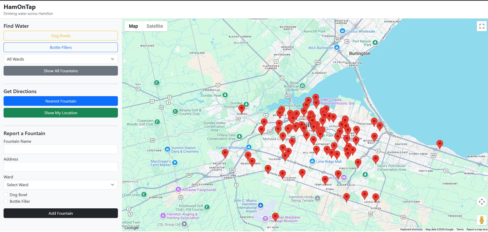
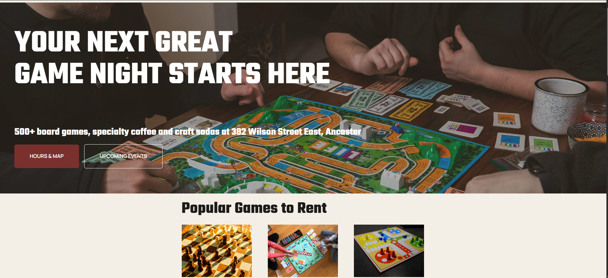

Featured Projects.
Some things I've built while learning and growing as a developer.

Water Fountain Finder
An interactive web application that displays public water fountains on a map and lets users filter locations by features.
This project helped me improve my JavaScript skills and learn about interactive maps.
Dungeon Crawler
A PHP adventure game using MVC, database queries and sessions to manage player movement and progress.
Concept Project
Ticket Machine Simulation
↗A Java application simulating a ticket machine with user input, fare calculations and ticket processing using OOP.

The Board Game Vault
A WordPress website for a fictional board game lounge with an event calendar, job board, gallery and location map.
I learned how to customize WordPress themes and organize features for different users.
ABOUT ME
A bit about me.
I'm a software developer currently completing my Software Support diploma at Mohawk College. I recently completed an eight-month Junior Developer co-op at Operatic Agency, where I worked on websites and web applications using PHP, React and WordPress. I enjoy creating user-friendly applications, solving problems and learning new technologies. My goal is to continue growing as a developer, especially in backend development.
Problem Solver
I enjoy tackling challenges and finding solutions.
Team Player
Good at collaboration and communication.
Always Learning
Exploring new technologies and improving my skills.
SKILLS
Technologies I work with.
Programming
Tools & Frameworks
Systems & Networking
Other Skills
EXPERIENCE & EDUCATION
My journey.
Jan 2026 – Aug 2026
Junior Developer (Co-op)
Operatic Agency
- Worked on websites using PHP, React and WordPress.
- Collaborated with designers and project managers.
- Participated in QA testing and debugging.
Expected Dec 2026
Computer Systems Technician – Software Support
Mohawk College
- GPA: 87% – Dean's Honour List.
- Studied programming, databases and web development.
- Developed troubleshooting and problem-solving skills.